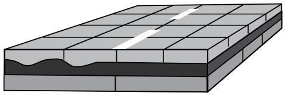
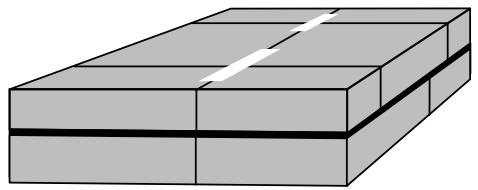
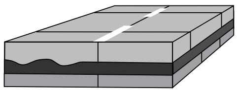
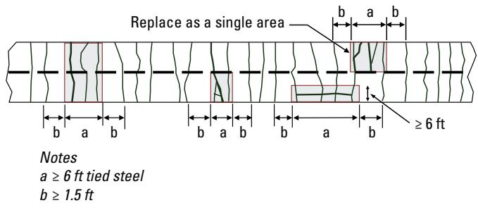
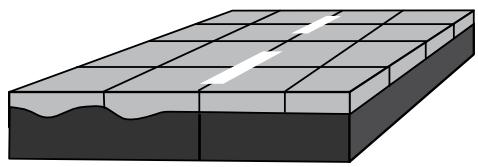
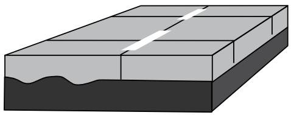

Overlay Technology
Planning & decision-making review — 20/24 chunks kept, 2 guides.
Sources (2)
1. Purpose and applicability
What problem does Overlay Technology solve?
Overlay technology provides a systematic solution to the pervasive problem of aging, distressed, or structurally deficient pavements. By applying a thin (2–4 in.) high‑strength concrete layer—either bonded to a sound base or placed over a separation medium—the method restores load‑carrying capacity, repairs surface defects, and adds structural value without resorting to full‑depth reconstruction. Overlay technology addresses the chronic problem of aging concrete or composite pavements that are approaching the end of their useful life and would otherwise require costly, disruptive full‑depth reconstruction, enabling agencies to extend service life (typically 15–30 years) while avoiding expensive, disruptive rebuilds. [1][2]

Bonded Concrete Overlays on Composite Pavements Figure 3-12. Examples of bonded overlays [1]IMCP — Ch. 3 (pp. 65–67), Ch. 10 (pp. 316–332); CPP Guide — Ch. 9 (pp. 261–264)
When is Overlay Technology appropriate, and when should another method be used?
The review finds that overlay technology should be used only when the existing pavement can provide uniform support and adequate movement control, or when those conditions can be achieved cost‑effectively through preliminary repairs. In such situations a thin (≤4 in.) concrete overlay—either bonded or unbonded—can be placed to extend service life by roughly 15–30 years. “Concrete overlays placed on existing concrete and composite (i.e., asphalt on concrete) pavements can be effective in extending pavement life by typically 15 to 30 years.” A bonded overlay is appropriate only if the underlying concrete is in good structural condition (or asphalt at least fair), free of cracks or other distress, with joints aligned and any cracks repaired; it creates a monolithic structure that improves ride quality, skid resistance, and reflectivity. “Bonded overlays help eliminate surface distresses and add some structural value to the pavement system by forming a monolithic pavement structure with the existing pavement.” When the base is stable but does not meet those stricter thresholds, an unbonded overlay may be applied; it relies on a separation layer (e.g., one‑inch hot‑mix asphalt or thick geotextile) and adds structural capacity without requiring bonding. “Unbonded overlays add structural capacity to the pavement system but do not require bonding to the existing pavement.” “Concrete overlays require uniform support conditions to deliver satisfactory performance.” Conversely, if the existing pavement shows extensive material‑related distress (e.g., D‑cracking, alkali‑silica reaction), widespread slab or fatigue cracking, inadequate subgrade support, drainage deficiencies, needs more than four inches of additional thickness for anticipated traffic loads, or would create clearance conflicts with curbs, gutters, sidewalks, utilities, or structures, the risk of premature failure is high and a full reconstruction or an alternative preservation method should be selected instead. [1][2]

Unbonded Concrete Overlays on Concrete Pavements –previously called unbonded overlay– [1]IMCP — Ch. 3 (pp. 65–66); CPP Guide — Ch. 9 (pp. 261–262)
2. Required inputs
What materials, mixture properties, and site conditions does Overlay Technology require?
Overlay technology relies on a conventional concrete paving mixture that can be modified to meet specific performance needs. The mix is composed of the usual concrete constituents—cement, supplementary cementitious materials, aggregate, water and chemical admixtures—and may be upgraded to high‑strength or fiber‑reinforced versions for ultra‑thin whitetopping, or to accelerated mixtures when rapid strength gain is required for early traffic opening. For bonded overlays the concrete is placed as a thin surface layer—typically 2 to 5 in. thick—over an existing pavement that is free of structural distress, in relatively good condition, and without cracks that could reflect into the new slab; joint layout should be aligned with underlying joints and thermal expansion properties matched to the existing concrete substrate. Unbonded systems use a separation layer (e.g., 1‑in. hot‑mix asphalt sheet or thick geotextile) and are built to a thickness of roughly 6 to 11 in.; they require adequate support from the substrate, at least 3 in. of intact asphalt remaining after milling, and avoidance of severely deteriorated conditions such as D‑cracking or alkali–silica reaction. Design must also consider edge support, pre‑overlay repairs, anticipated traffic loads and prevailing climate to ensure long‑term performance. [1][2]

Unbonded Concrete Overlays on Composite Pavements Figure 3-13. Examples of unbonded overlays [1]IMCP — Ch. 3 (pp. 66–68), Ch. 10 (pp. 332–334); CPP Guide — Ch. 9 (p. 264)
What design details, dimensions, tolerances, or preconstruction tests govern Overlay Technology?
Overlay design is divided into bonded and unbonded systems, with the selection based on the condition of the existing pavement. For bonded concrete overlays (BCO), the overlay functions as a thin surface layer typically 2 to 5 in thick (often limited to ≤4 in for preservation treatments) and may be placed only when the underlying concrete is free of structural distress, cracks are repaired, and joint locations can be matched; “the joints should be aligned with joints in the underlying pavement” to prevent reflective cracking and allow the two layers to act as a single unit. When the substrate is asphalt, bonded overlays are generally 4‑6 in thick; if milling is required, at least 3 in of intact asphalt must remain to retain load‑carrying capacity, and the slab may be divided into square panels 3‑8 ft on a side to control thermal movement. Unbonded overlays rely on a separation layer—traditionally 1 in of hot‑mix asphalt or a thick geotextile fabric—and are designed with an overlay thickness generally 6‑11 in, effectively forming a new concrete pavement structure.
All design parameters must satisfy the limits imposed by the Mechanistic‑Empirical Pavement Design Guide (MEPDG); thin bonded overlays on asphalt “must be less than six inches thick” and no additional dimensional tolerances beyond these thickness constraints are prescribed. Joint design follows normal concrete practices, and edge support must be adequate to resist slab movement. Material properties include high‑strength, fiber‑reinforced concrete; inclusion of fibers is recommended because “For BCOA pavements, including fibers in the overlay concrete mixture … can help control plastic shrinkage cracking and provide post‑cracking integrity.” Matching the coefficient of thermal expansion (CTE) of the overlay to that of the existing concrete is required for bonded systems: “Materials with similar temperature sensitivity will expand and contract similarly at the interface.”
Pre‑construction testing focuses on three primary activities: (1) a visual and structural inspection of the existing surface to assess crack presence, material‑related distress, and uniformity; (2) verification that the substrate can provide sufficient bearing for the proposed thickness, with removal and replacement of areas lacking adequate support; and (3) confirmation that the overlay mix’s CTE matches the underlying concrete when a bonded system is used. Additional checks may include confirming that accelerated mixtures meet early‑strength requirements if earlier traffic opening is desired. [1][2]

Recreated from ©2022 Applied Pavement Technology, Inc., after ACPA 1995, used with permission Figure 6.4. Full-depth repair recommendations for a CRCP [2]IMCP — Ch. 3 (pp. 65–68), Ch. 10 (pp. 316–334); CPP Guide — Ch. 9 (pp. 261–264)
4. Work sequence
What must be completed before Overlay Technology begins?
The reviewer notes that before any concrete overlay—bonded or unbonded—can be placed, the existing pavement must first be thoroughly evaluated to confirm it can provide a uniform, sound support interface. The most important aspect of concrete overlay design is the interface with the existing pavement. Consequently, major structural repairs should not be required; any cracks in an existing concrete slab must be repaired, joint patterns identified and aligned, and distressed asphalt must retain at least three inches after milling to preserve load‑carrying capacity. For unbonded systems the base need only be uniform and stable—Concrete overlays require uniform support conditions to deliver satisfactory performance—and any areas incapable of supporting the 6‑to‑11‑inch thick overlay must be removed and replaced. The surface should be cleaned and treated as necessary to promote proper adhesion. Potential construction impacts such as clearance at structures, shoulder width, curbs, gutters, sidewalks or utility elevations must be identified, and the expected service life of the overlay must meet or exceed the agency’s desired lifespan. Successful concrete overlay design addresses all overlay system design components (e.g., thickness, panel dimensions, bond condition, joint design, edge support, material properties, pre‑overlay repairs) in a manner that achieves the desired performance before installation. [1][2]
 Determining appropriate concrete overlay solution based on existing pavement condition and resulting preliminary repairs needed [2]
Determining appropriate concrete overlay solution based on existing pavement condition and resulting preliminary repairs needed [2]
IMCP — Ch. 3 (pp. 65–66), Ch. 10 (pp. 316–334); CPP Guide — Ch. 9 (pp. 261–264)
5. Staging and logistics
What space, site access, weather, or environmental constraints affect Overlay Technology?
Overlay design must accommodate site‑specific climatic conditions because temperature cycles induce thermal expansion and contraction at the bond line. For bonded overlays on existing concrete slabs, the overlay mix must have a coefficient of thermal expansion comparable to that of the substrate; otherwise differential movement can overstress the interface, a problem driven primarily by differences in coarse aggregate types between the old slab and the new overlay. When planning a concrete overlay, the primary spatial and site‑access concerns stem from the added thickness of the new layer. This extra depth can create clearance problems at bridges, overpasses, or other structures, narrow shoulders, steepen foreslopes, and raise the elevations of curbs, gutters, sidewalks, driveways, and nearby utilities, often requiring reconstruction or adjustment. No additional weather‑related or broader environmental constraints were identified beyond these thermal and geometric considerations. [1][2]
 Recreated from Gaspard and Morvant 2004, Louisiana Transportation Research Center Figure 4.20. Bridge approach slab profile before and after slab jacking [2]
Recreated from Gaspard and Morvant 2004, Louisiana Transportation Research Center Figure 4.20. Bridge approach slab profile before and after slab jacking [2]
IMCP — Ch. 3 (pp. 67–68); CPP Guide — Ch. 9 (pp. 261–262)
6. Quality control and acceptance
What characteristics must be inspected or tested for Overlay Technology?
Inspectors must first verify the condition of the existing pavement‑overlay interface, confirming it is sound and free of distress that would preclude an overlay. “The most important aspect of concrete overlay design is the interface with the existing pavement.” For bonded overlays the underlying concrete must be in good structural condition; any cracks must be repaired because unrepaired cracks will reflect through the new layer. The existing slab should also be examined for material‑related problems such as D‑cracking or alkali‑silica reaction, and areas lacking adequate support must be removed or stabilized before placement. Joint deterioration, slab or fatigue cracking, rutting, inadequate subgrade support, and poor drainage are additional conditions that must be identified. “Major structural repairs should not be required.” Uniformity and stability of the base are essential for both bonded and unbonded systems; “Concrete overlays require uniform support conditions to deliver satisfactory performance,” and the base must be stable and uniform when an unbonded overlay is selected. The proposed overlay thickness must be checked to fall within the typical 2 to 10 in range (thin surface courses 2‑5 in). Joint placement should be inspected for proper alignment with underlying joints to prevent reflective cracking and promote composite action. The presence and uniformity of a separation layer—typically a one‑inch hot‑mix asphalt sheet or approved geotextile fabric—must be confirmed to provide independent movement between the old and new concrete layers. Finally, inspectors must identify potential construction‑related issues such as reduced shoulder width, altered curbs, gutters, sidewalks, driveways, or utility elevations, and verify that the projected service life meets agency expectations. [1][2]

Bonded Concrete Overlays on Asphalt Pavements –previously called ultra-thin whitetopping– [1]IMCP — Ch. 3 (pp. 65–66); CPP Guide — Ch. 9 (pp. 261–262)
7. Safety and environmental controls
What hazards does Overlay Technology present for workers and the public?
During overlay construction, the added thickness can create clearance problems at structures and may narrow shoulders or steepen foreslopes, exposing motorists to collision risk. In built‑up areas the raised deck can alter curb, gutter, sidewalk and driveway elevations, increasing the chance of trips or vehicle‑impact incidents for pedestrians and drivers. Adjustments to utilities and roadway fixtures may also be required, further complicating public safety during installation. [2]
CPP Guide — Ch. 9 (pp. 261–262)
8. Curing, protection, and handoff
When can work completed under Overlay Technology carry construction traffic or open to users?
When an accelerated concrete mixture is employed, the overlay gains strength more quickly, permitting the pavement to be opened to construction vehicles or the traveling public sooner than with standard mixes. The timing of traffic opening depends on achieving sufficient early‑age strength as defined by the project specifications, rather than a fixed calendar date. [2]
 Recreated from ©2022 Applied Pavement Technology, Inc., used with permission [2]
Recreated from ©2022 Applied Pavement Technology, Inc., used with permission [2]
CPP Guide — Ch. 9 (p. 264)
9. Expected performance and maintenance
What common failures or distresses can occur with Overlay Technology?
The review of both sections makes clear that overlay technology is prone to a range of failures when the underlying pavement condition or material compatibility is inadequate. Existing defects are the primary catalyst: if cracks, joint deterioration, or subgrade problems are not remedied, they tend to manifest in the new layer as reflective cracking or other distress. In bonded systems, unrepaired cracks propagate through the new layer, producing reflective cracking; similarly, any structural weakness—such as widespread slab cracking, poor drainage, or insufficient support—can compromise both bonded and unbonded overlays. Material incompatibilities also generate problems: a mismatch in coefficients of thermal expansion between the existing slab and the overlay creates bond‑line stresses that may crack or debond the interface, while thin bonded overlays lacking fiber reinforcement are especially vulnerable to plastic shrinkage cracking. Finally, geometric constraints introduced by the added thickness of an overlay can lead to clearance conflicts at structures, narrowing of shoulders, and steepening of foreslopes, further limiting performance. [1][2]
 Corner cracking in jointed concrete pavement [1]
Corner cracking in jointed concrete pavement [1]
IMCP — Ch. 3 (pp. 65–68); CPP Guide — Ch. 9 (pp. 261–262)
What preventive maintenance, monitoring, or repairs may Overlay Technology need?
Preventive maintenance for concrete overlays begins with a comprehensive condition survey of the existing pavement. The survey must verify that support and movement control are uniform; if non‑uniform conditions are found, preliminary repairs such as correcting subgrade irregularities or stabilizing weak sections are required before an overlay can be placed. For bonded systems any pre‑existing cracks must be repaired because “If an existing concrete pavement is cracked and is to have a bonded overlay, the crack needs to be repaired or it will reflect through the overlay.” In unbonded applications a separation layer isolates the new slab from underlying cracking, so monitoring focuses on keeping that layer intact – “If the overlay is unbonded, a separation layer prevents the cracks from reflecting up through the new layer.” Sections of pavement that cannot provide adequate support must be removed and replaced, and the underlying surface should be examined for advanced material‑related distresses (e.g., D‑cracking, ASR) that could render the overlay unsuitable. After construction, overlays are designed for limited maintenance; therefore “Routine visual inspections of the interface and underlying pavement constitute the primary preventive actions.” These inspections detect separation‑layer degradation, new cracking, or loss of support, allowing timely repairs to preserve performance. [1][2]

Unbonded Concrete Overlays on Asphalt Pavements –previously called conventional whitetopping– [1]IMCP — Ch. 3 (pp. 65–66); CPP Guide — Ch. 9 (p. 262)
References
- Integrated Materials and Construction Practices for Concrete Pavement: A STATE-OF-THE-PRACTICE MANUAL (2019)
- Concrete Pavement Preservation Guide (Third Edition) (2022)